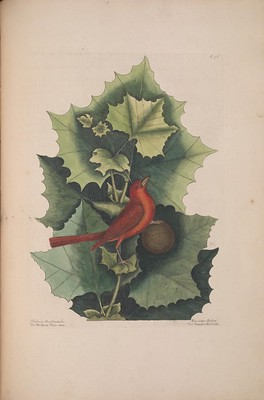
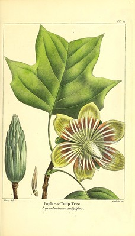
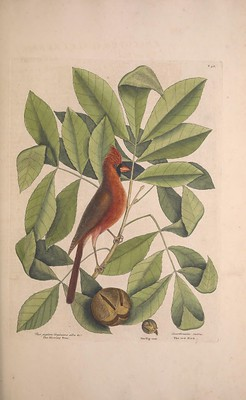

Introduction
There are many benefits to identifying the trees that grow around us. In rural areas, they can give us more information about the area we are in, or a specific forest. In urban settings, learning about different types of trees can be useful to determine which species can be beneficial to enhancing the urgan landscape. Trees also provide all kind of wild edibles for both humans and wildlife, as well as lumber for building. Finally, learning to identify trees can deepen our own connection to the natural world.
Oak Trees

In the United States, oak trees make up one of the largest groups of trees. Fifty to seventy-five species occur in the United States alone, mainly occuring in the east. They are one of the main and most important trees for lumber usage. All oaks bear acorns which is an important source of food for wildlife as well as the continuation of forests. Oaks were venerated by ancient peoples and still remain a symbol of strength and endurance.
Types of oak trees:
- White oak (pictured)
- Red oak
- Bur oak
Maple Trees

In temperate lands, maples can also be found worldwide and are the next best-known tree. Thirteen of the almost 120 species can be found in North America. They have paired, winged fruits otherwise known as "helicopters" or "whirlygigs" which are also sources of food for wildlife.
Types of maple trees:
- Silver Maple (pictured)
- Sugar Maple - producers of maple syrup
- Red Maple
Sycamore Trees
Sycamores can be found along the banks of streams in the eastern United States. Their bark peels off in large brown sheets, revealing a cream-colored fresh bark beneath. The fruits are called "buttonballs" that look like a large bur with a stem. The wood produces a course-grained wood that is sometimes used to make furniture.
American Elm Trees

American Elms are vase-shaped with spreading, open branches. They are prolific in the eastern woods, fields, and town streets. It is a widely planted tree used for shade and street trees, and can also be used for lumber. The seeds are small and papery thin.
Tulip Trees
Tulip trees can also be called yellow poplar or tulip poplars. Tulip tree leaves have been found as fossils in Europe and Greenland, making this species over fifty million years old. Tulip trees can grow quite tall with less branches near the ground. They are named for greenish-yellow tulip flowers that open in May and June. The fruit is a cone of many small, winged seeds. The bark is rigid, thick, and grayish.
Hickory Trees
Hickories are at their best in wild, open forests: large, well-shaped with straight trunks and heavy limbs. They are nut-bearing trees. Shagbark Hickories are the most common in the Eastern United States featuring gray bark with long, loose scales. The meat of the nuts is edible and sweet. Hickory wood is prized for smoking meats, and the lumber produced is a tough, light wood.
Sweetgum Trees

Sweetgums are often planted as a shade tree because of their brillian fall foilage. The leaves can be mistaken for a maple, but are star-shaped. The fruit is a ball covered with tiny thorns that opens to release its seeds, which are eaten by birds. The bark is scaly, thick, and gray.
Conclusion
The Eastern United States alone contains many beautiful, useful, and food-giving trees. This is a small sampling of that variety. You can use many identifying factors listed here in your own tree identification: leaf shape, bark, fruits, and uses. Other varieties to look for include pines, redbuds, willows, hornbeams, beeches, birches, and many fruit trees.